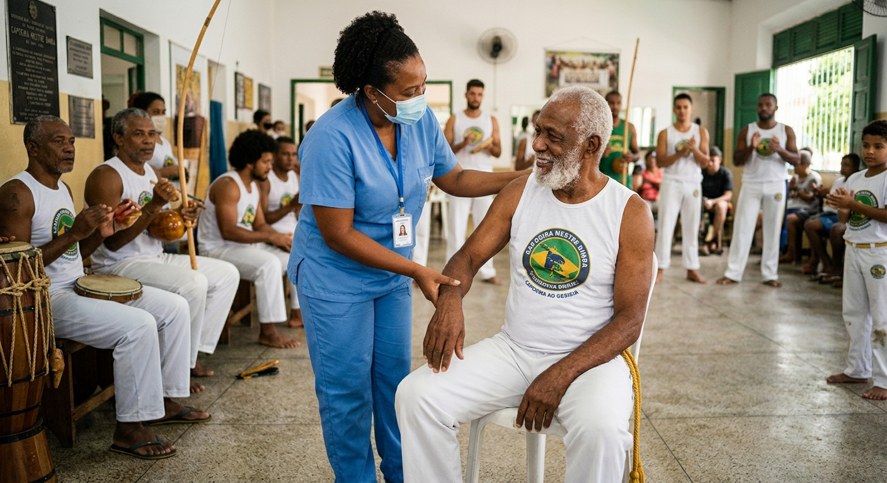

Conhecimento que nasce no território
Enfermagem que cuida, cultura que transforma.
Uma jornada pelos saberes, práticas e histórias que aproximam o cuidado em saúde das comunidades do Maranhão.

Enfermagem e capoeira: cuidado que acontece em comunidadeUm olhar ampliado
O cuidado também é feito de escuta e pertencimento.
Este projeto reúne experiências de enfermagem e cultura para valorizar os modos de viver, cuidar e construir saúde em cada lugar. Aqui, a comunidade não é cenário: é parte essencial do conhecimento.
Enfermagem na capoeira
A importância da assistência e da promoção da saúde dentro da roda.
01 / Prevenção
Prevenção de lesões
Aquecimento, alongamento e movimento com segurança.
Saiba mais 02 / Cuidado imediatoPrimeiros socorros
Acolhimento rápido e seguro diante de imprevistos na roda.
Saiba mais 03 / Bem-estarPromoção da saúde
Capoeira, hábitos saudáveis e cuidado integral.
Saiba mais 04 / ConhecimentoEducação em saúde
Informação e autocuidado compartilhados na comunidade.
Saiba mais 05 / ComunidadeQualidade de vida e inclusão
Respeito, pertencimento e bem-estar para todas as pessoas.
Saiba mais